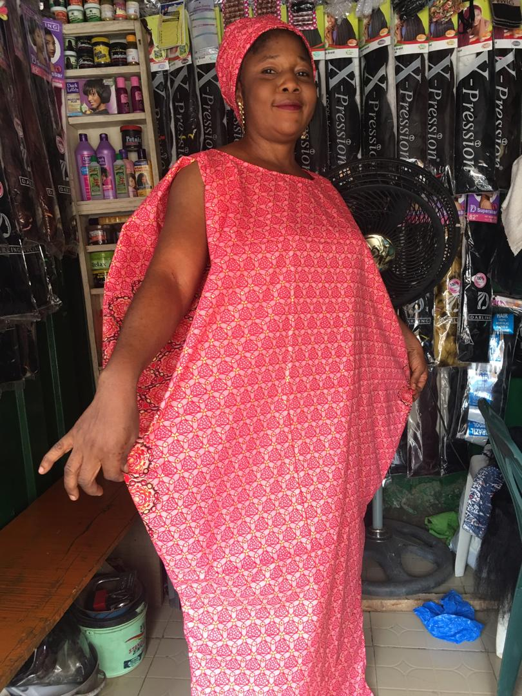

99 Tweets

Tom Media
@TheTomMedia
The Up and Coming Tech Guy
256 Following
200 Followers
Tweets
Tweets & Replies
Media
Likes
Part 1 of my new programming equipment.. just
waiting on my MacBook now.. it’s acceptable to
put .JS on these right? Winking face

The LinkedIn Sign Up Page with HTML, CSS and
JavaScript. Check out the link below.
@_100DaysOfCode @african_coders @traversymedia
https://youtu.be/9uhVoXbZVEY
Let's start a Frontend developers twitter
community by following each other! Follow
everyone who likes or comment on this tweet and
retweet for maximum exposure. Face without
mouth


You Might Like
Huawei Europe
@Huawei_Europe
TECNO POP 3 Plus
@tecno_pop_3_plus
Joe Biden
@joe_biden
Laycon
@itzLaycon
Trends for you
Trending in Nigeria
#TachaSaysEndSars
Trending with #FSARS
Trending in Nigeria
#TachaSaysEndSars
Trending with #FSARS
Trending in Nigeria
#TachaSaysEndSars
Trending with #FSARS
Trending in Nigeria
#TachaSaysEndSars
Trending with #FSARS
Trending in Nigeria